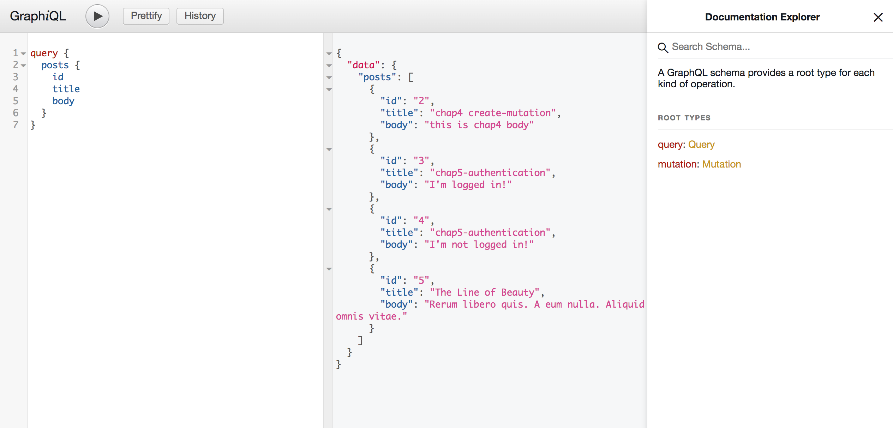

Chap9 Mutation(DELETE)
Goal of this chapter
This chapter we are doing just the same things we've already done!
Step1 generate destroy_post mutation
rails g graphql:mutation destroy_post
Step2 Edit destroy_post mutation
destory_post.rb
module Mutations # Don't forget to change to Mutations::BaseMutation class DestroyPost < Mutations::BaseMutation def ready?(**_args) if !context[:current_user] raise GraphQL::ExecutionError, "You need to login!" else true end end # Just returning id is okay field :id, ID, null: true argument :id, ID, required: true def resolve(id:) post = Post.find(id) if post.user != context[:current_user] raise GraphQL::ExecutionError, "You are not authorized!" end post.destroy { id: id, } end end end
Step3 Test it!
1 Destroy existing post

2 query posts

*There is no id: "1" post.
Finish!